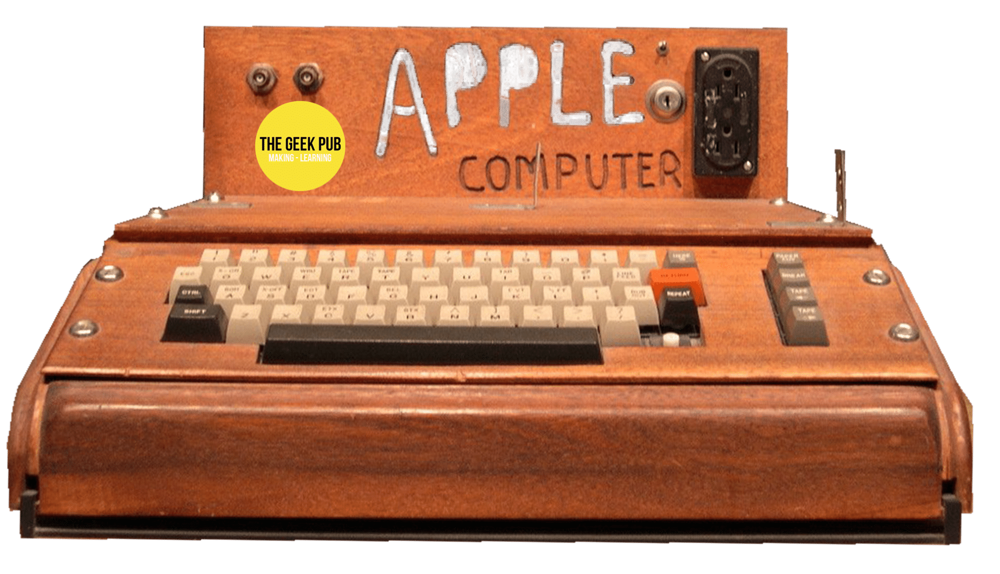
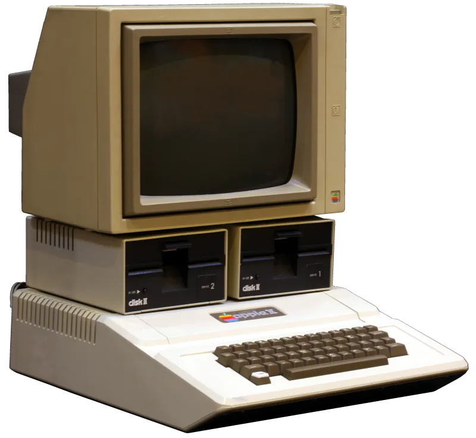
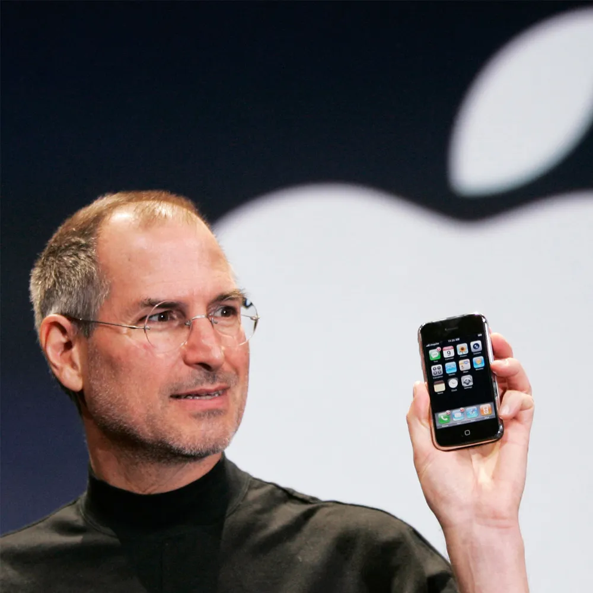

O Nascimento da Apple
A Apple Inc. foi fundada em 1º de abril de 1976 por Steve Jobs, Steve Wozniak e Ronald Wayne na garagem dos pais de Jobs, localizada em Los Altos, Califórnia. A ideia inicial era criar um computador pessoal acessível e fácil de usar, algo que na época parecia uma visão ousada. A primeira criação da Apple, o Apple I, foi um sucesso modesto, mas serviu como um marco importante no início da revolução dos computadores pessoais.
O Sucesso do Apple II
Em 1977, a Apple lançou o Apple II, que se tornou um dos primeiros computadores pessoais de sucesso comercial. O Apple II não só trouxe inovação em termos de design e funcionalidade, mas também estabeleceu a Apple como um jogador importante no mercado de tecnologia. Ele incluía gráficos coloridos e uma interface amigável que atraía tanto entusiastas da tecnologia quanto o público em geral.
O Lançamento do Macintosh
Em 1984, a Apple fez história novamente com o lançamento do Macintosh, o primeiro computador pessoal com uma interface gráfica de usuário (GUI). O icônico comercial de lançamento, que foi transmitido durante o Super Bowl, fez com que o Macintosh se tornasse um símbolo de inovação e criatividade. O Macintosh trouxe uma nova maneira de interagir com os computadores, o que eventualmente influenciou todo o setor de tecnologia.
A Era de Steve Jobs e a Revolução dos Produtos
Após um período de dificuldades, Steve Jobs retornou à Apple em 1997 e iniciou uma série de transformações que mudariam a empresa para sempre. Lançamentos revolucionários como o iMac, iPod, iPhone e iPad redefiniram não apenas a Apple, mas também o mercado de tecnologia global. O iPhone, lançado em 2007, foi especialmente marcante, combinando um telefone, um iPod e um navegador de internet em um único dispositivo, o que desencadeou a era dos smartphones.
Legado e Futuro
Hoje, a Apple continua a ser uma das empresas mais influentes e inovadoras do mundo. Com produtos como o Apple Watch e serviços como o Apple Music e Apple TV+, a empresa permanece na vanguarda da tecnologia, sempre buscando novas maneiras de integrar design e funcionalidade.